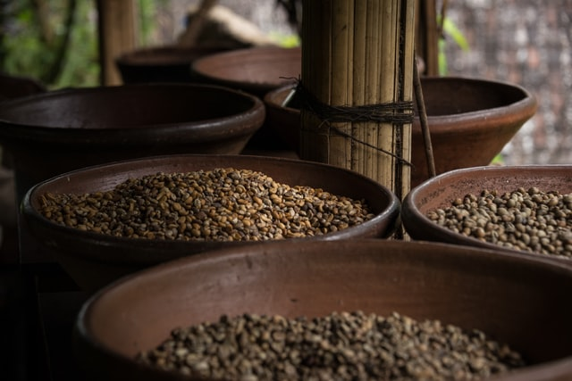

LEGENDOS Istorijoje žinomos kelios legendos apie tai, kaip buvo atrastas stimuliuojantis kavos poveikis. Vienas iš seniausių pasakojimų kalba apie jauną ožkaganį gyvenusį Etiopijoje apie 850 m.e. metus. Jis pastebėjo, kad paėdusios uogų nuo vieno krūmo jo ožkos tampa ypač energingos. Išgirdę ožkaganio pasakojimą, vienuoliai paragavo žalių kavos pupelių, tačiau labai nusivylė karčiu skoniu ir įmetė pupeles laužan.
Netrukus, pasklido malonus spragančių kavos pupelių aromatas. Susidomėję vienuoliai užpylė kepintas pupeles verdančiu vandeniu ir gautą gėrimą paskelbė Dievo dovana, nes kavos savybės neleido jiems užmigti visą naktį.

ATRADIMAS Kavos gėrimo tradicija skaičiuojama nuo 11 m. e. amžiaus. Tuo metu kava pirmą kartą iš Etiopijos atvežta į Arabiją. Persai buvo be galo sužavėti tonizuojančiu naujojo „musulmonų vyno“ poveikiu, nes tikrasis vynas islamo išpažinėjams buvo griežtai draudžiamas. Kavos vardas yra kilęs iš senosios arabų kalbos žodžio “qahawah".
Antroje 15 a. pusėje kava per Meką ir Mediną išplito visoje Arabijos karalystėje, o 1510 metais pasiekė Kairą Egipte.
Pirmoje 16 a. pusėje Osmanų imperija pasiekė savo galybės viršūnę. Kavos pupelių prekyba užėmė vis didesnę dalį Arabijos, Mažosios Azijos, Sirijos, Egipto ir Pietryčių Europos rinkose. Pirmieji istorijoje kavos namai buvo atidaryti
Damaske ir Alepe 1530 ir 1532 metais.
EUROPA 1615 metais Venecijos pirkliai atvežė pirmuosius kavos pupelių maišus į Vakarų Europą. Nuostabus naujojo gėrimo kvapas ir tonizuojantis poveikis greitai išpopuliarino kavą. Visoje Europoje pradėjo steigtis kavos namai. Niekad neužmirštanti prekybos reikalų buržuazija greitai įvertino stimuliuojantį kavos poveikį, girtuoklius paverčiantį energingais darbuotojais. Olandų ir anglų jūrų pirkliai įkūrė kavos plantacijas užjūrio kolonijose po visą pasaulį.
1683 metais turkų armija buvo priversta nutraukti Vienos puolimą ir skubiai pasitraukė palikdama 500 maišų su kava. Šiuo karo grobiu sumaniai pasinaudojo vienas lenkų pirklys atidaręs mieste pirmuosius kavos namus.
Kavos populiarumas lėmė ir sparčią kavamedžių plantacijų plėtrą. 17 a. pabaigoje kavamedžius pradėta sėkmingai auginti šiltnamiuose. Vienas medelis 1714 metais kaip dovana buvo nusiųstas karaliui Liudvikui XIV į Paryžių. Manoma, kad šis vienintelis augalas yra milijonų kavamedžių protėvis.
XX AMŽIUS XX a. pradžioje didžiausiu kavos augintoju pasaulyje buvo Brazilija. Šiandien beveik visa pasaulio kava auginama Centrinėje Amerikoje, Brazilijoje ir tropinėse Pietų Amerikos platumose. Metinis pasaulio kavos derlius siekia 100 milijonų maišų – iš jų Brazilijos dalis sudaro ketvirtadalį šio skaičiaus. Brazilijoje užauginama aštuoni su puse milijono kavos maišų per metus. Šiandien kavos pupelių skrudinimą namuose jau pakeitė prekyba naudojimui paruoštomis, skrudintomis pupelėmis. 1901 metais japonas dr. Sartori Kato pristatė pirmuosius tirpios kavos pavyzdžius. 1938 Nestle kompanija pradėjo masinę tirpios kavos gamybą. Pasaulinė kavos vartojimo dinamika matoma lyginant kavos žaliavos suvartojimą per pastaruosius 250 metų: 1750 m. – 600 000 maišų, 1850 m. – 4 000 000 maišų, 1950 m. – 36 000 000 maišų, 1995 m. – 94 000 000 maišų, 2000 m . – 103 000 000 maišų.
Kavos paklausa iškėlė kavos prekybą į antrąją vietą pasaulinėje rinkoje, tuoj po naftos produktų prekybos. Ši prekyba išgyveno gamybos pertekliaus laikus, viršprodukcijos atsargų deginimą, krentančias kainas, pasaulines ekonomikos krizes, dviejų pasaulinių karų metu smukusį vartojimą ir pasaulinį susitarimą dėl stabilių kavos kainų. Vokietijoje po Antrojo pasaulinio karo kava tapo atsigaunančios šalies ūkio ir ekonomikos stebuklo simboliu. Kavos gėrimas simbolizavo nepritekliaus ir sunkių pokario laikų pabaigą.